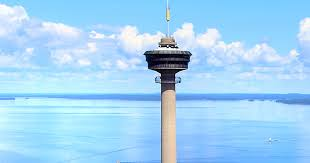
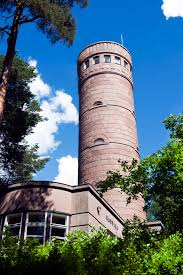
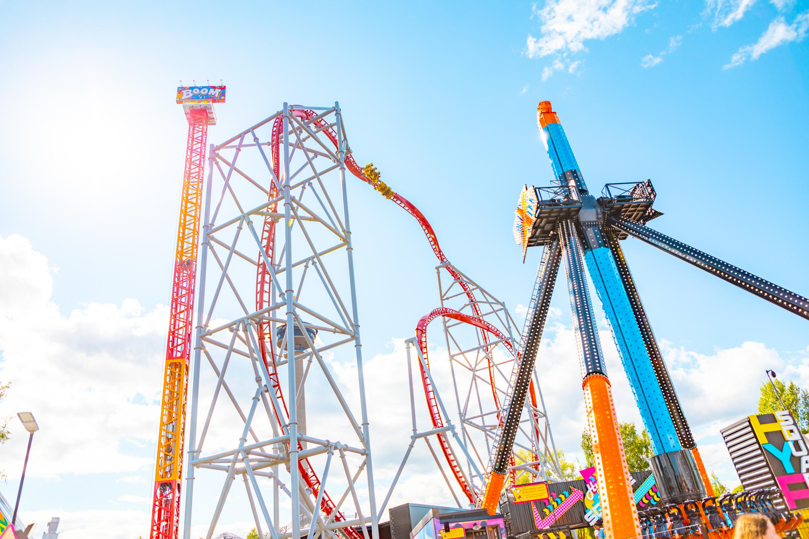
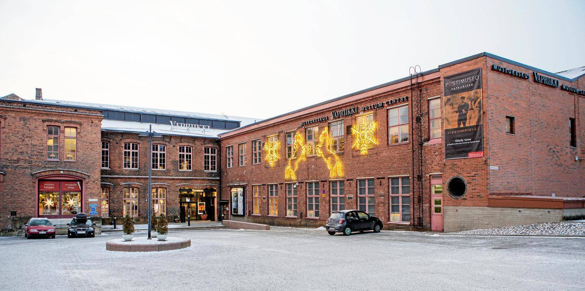

Näsinneula
Tampereen tunnetuin maamerkki, näkötornisekä ravintola, josta avautuu upeat näkymät yli kaupungin.
Tampere tarjoaa monipuolisia nähtävyyksiä historiallisista kohteista moderneihin elämyksiin.

Tampereen tunnetuin maamerkki, näkötornisekä ravintola, josta avautuu upeat näkymät yli kaupungin.

Kaunis harjualue, näkötorni ja herkulliset munkit kahvilassa.

Huvipuisto sekä muita elämyksiä koko perheelle.

Museokeskus, jossa vaihtuvia näyttelyitä ja tekemistä kaikenikäisille.